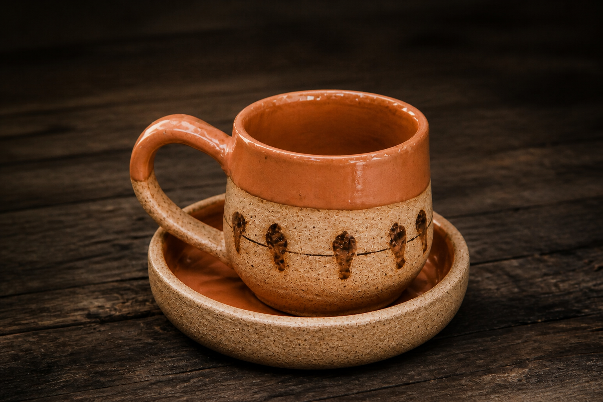
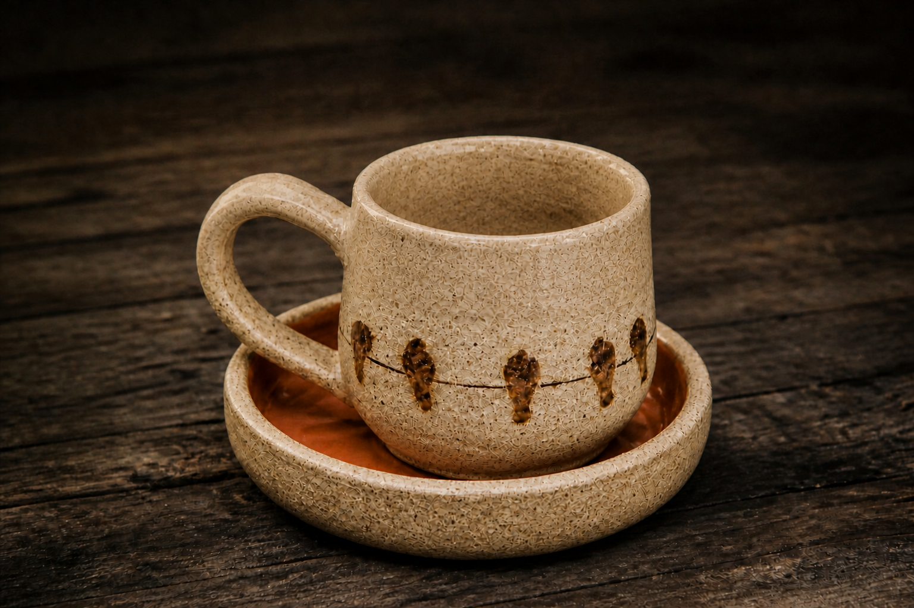

Caneca Verde Bosque
★★★★★
(4.9 de 5 — 42 avaliações de clientes)
R$ 74,90
Feita à mão com argila selecionada e esmalte vitrificado verde oliva acetinado. Peça única, perfeita para cafés especiais e momentos de pausa e aconchego.
Especificações Técnicas
| Marca | Argila & Afeto (Produção Artesanal Própria) |
|---|---|
| Material | Argila terracota nobre com esmaltação cerâmica atóxica (livre de chumbo) |
| Dimensões | 9,5 cm (altura) x 8,5 cm (diâmetro da boca) |
| Peso | 320 g |
| Capacidade | 320 ml |
| Garantia | 90 dias contra defeitos estruturais e quebras no transporte |